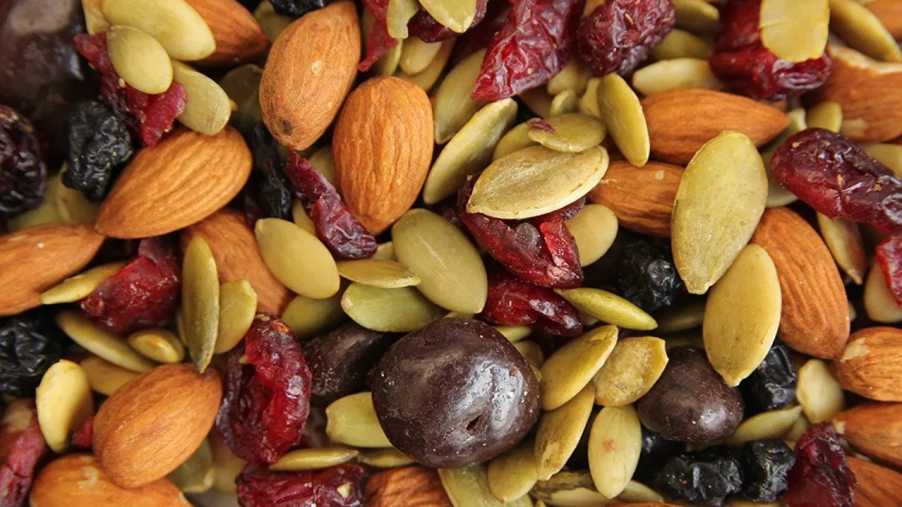

Trail Mix

Servings
Ingredients
- 1/4 cup pecans
- 1/4 cup walnuts
- 1/4 cup cashews
- 1/4 cup almonds
- 1/2 cup dried cherries
- 1/2 cup dried cranberries
One thing I love about trail mix is its customizability. Feel free to modify the ingredients!
Instructions
- Prepare a container
- Pour in ingredients
- Mix